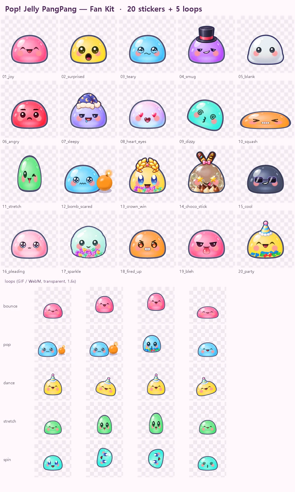

Pop! Jelly PangPang Fan Kit


Real-time online battles · up to 6 players · 3v3 teams
20 jelly stickers and 5 transparent loops. Use them in memes, fan art, stream overlays and thumbnails.
Download the Fan KitZIP, 11 MB
See all 20 stickers and 5 loops

- Feel free to use these in memes, fan art, stream overlays and thumbnails.
- Please don’t use them on merchandise for sale.
- A credit is always appreciated: “Pop! Jelly PangPang”
Inside: transparent PNG stickers (512 and 1024 px, 20 poses) and transparent GIF and WebM loops under 2 seconds (bounce, pop, dance, stretch, spin).